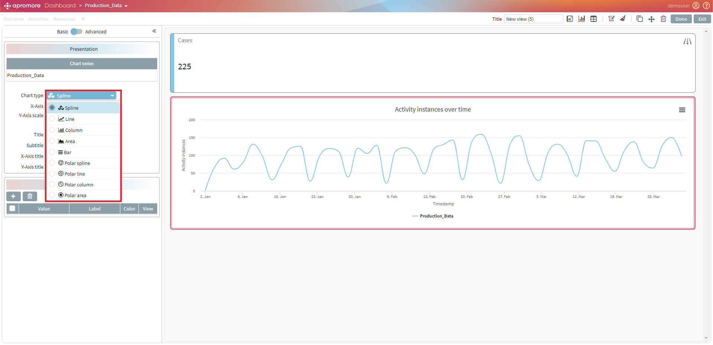

Create dashboards
The Apromore Custom Performance Dashboard offers a variety of custom visualization options.
To open the dashboard, select at least one event log and click on Analyze“ - > „View performance dashboard. We can also visualize multiple event logs in the custom dashboard by selecting them.

Once the performance dashboard opens up, click on the ‘+’ button to create a dashboard from an existing dashboard, or create a dashboard from scratch.

Create from existing views
The main purpose of creating a dashboard from an existing view is to modify an existing view by retaining the existing performance metrics and adding additional performance metrics.
To create a custom dashboard from an existing view, click on Create from existing.

We can choose from three different views: Overview, Activities and Resources.

To create a new dashboard from an existing resources view, click on Resources.

A new Resources dashboard will open up. Similarly, we can create a new dashboard from Overview and Activities.

Create from scratch
To create a custom dashboard from scratch, click on Create from scratch.

A blank editable view will open up.

We can change the view’s title by entering the text in the Title text field.

Add Stat Tiles
We can also add different statistic metrics by clicking on the Add a new tile button.

We can select different metrics from the Stats type drop-down list and make changes to different visualization metrics.

We can also change the colors of a value or an icon by clicking on the color box.

We can also add and save a custom color by adding the Hex code of the desired color.

Add charts
To add a chart, click on the Add new chart button.

To make changes to a chart, make sure the chart is selected first from the Chart type dropdown.

We can add different types of charts to the dashboard. To know more about different charts, please check the manual.

Add Tables
To add a table, click on the Add new table button.

We can select different tables from the Table type dropdown.

After all the changes have been made, click on Done.